PROPOSTA DE ENSINO PARA ALUNOS SURDOS
Trabalho desenvolvido para a feira de projetos do Senac
Pindamonhangaba.
Orientação: Prof. Ma. Iara Diniz de Souza,
Bruno Ribeiro Santos, Joana Carvalho Bäenninger Vieira de Souza, Luiz
Guilherme Nunes da Silva, Lukas Gomes do Carmo, Nicolas Evaristo
Martins

Alfabeto
Nesta fase, o objetivo principal é que a criança reconheça visualmente a forma da letra e comece a criar a primeira associação mental.
-
Apresentação Lenta e Clara: Comece sinalizando a primeira letra (por exemplo, a letra A) de forma clara e pausada. É crucial que a criança tenha tempo para observar bem o formato da mão antes de tentar a reprodução.
Repetição Guiada: Agora é a vez da criança a repetir o sinal. Mantenha o ritmo lento e, se necessário, ajude a guiar a mão para corrigir o formato. O foco inicial é desenvolver a coordenação motora para a forma correta.

Números
Nesta fase, o objetivo principal é que a criança associe o sinal da mão à quantidade correta e ao símbolo numérico.
Apresentação Sequencial com Quantidade: Introduza cada número na sequência. Ao sinalizar o número 3, mostre simultaneamente três objetos e o símbolo numérico "3" escrito.
Repetição e Contagem: Sinalize o número e peça que a criança conte os objetos. Em seguida, diga o nome do número e peça que a criança sinalize a quantidade e pegue o número correspondente de objetos.
Consolidação e Prática
Com o reconhecimento da quantidade, o foco é na ordenação dos
números e na capacidade de recuperá-los rapidamente. Pratique a
contagem do 0 ao 10, pedindo à criança para sinalizar cada número
na ordem correta, sem pausas. Isso constrói o conceito de
sequência. Use também jogos rápidos onde a criança deve sinalizar
um número aleatoriamente ou, inversamente, pegar o símbolo
numérico (cartão) correspondente ao sinal que você fizer. Peça à
criança para recolher uma quantidade específica de objetos (Ex:
"Traga 9 lápis"). A frequência na prática é a chave para o reforço
da memória sem causar cansaço.
1 2 3 4 5 6 7 8 9 10

Cumprimentos
O objetivo inicial é que a criança compreenda o significado de cada sinal e o contexto social em que ele é usado.
Ênfase na Expressão Facial: Destaque a importância das expressões não manuais. Ao ensinar "Tudo Bem?", demonstre claramente a expressão de pergunta. Para a resposta "Bem", use a expressão de satisfação.
Repetição Imediata: Convide a repetir o sinal, a expressão facial e (se aplicável) a palavra dita simultaneamente. O foco é garantir a harmonia entre gesto e face.
Consolidação e Prática
A prática visa
automatizar a resposta correta e aumentar a fluidez na
comunicação. Crie pequenos e frequentes diálogos, visando a
escolha rápida do sinal apropriado para a pergunta ou situação.
Faça também um jogo rápido onde você sinaliza um cumprimento e a
criança deve reagir corretamente sem confundi-lo com outros
cumprimentos.
Aplicação e Socialização
O objetivo final é
integrar os sinais de cumprimento nas interações cotidianas,
tornando-os ferramentas sociais.
Dramatização de Interações: Crie atividades de simulação, como "Recebendo a Visita". A criança pratica a sequência completa: cumprimentar, perguntar como está e se despedir, usando os sinais de forma coesa.
Uso em Rotinas Diárias: Incentive o uso dos sinais como parte integrante da rotina:
-
Sinalizar "Bom Dia" ao ver os colegas ou familiares pela manhã.
-
Sinalizar "Até Logo" na hora de ir embora
Trabalho de Observação: Peça à criança para observar e identificar quando outras pessoas usam os cumprimentos. Isso reforça que o uso dos sinais é uma norma social e um meio de conexão.
O elogio e o incentivo são essenciais em todas as fases para que a criança desenvolva a confiança social necessária para usar a língua de sinais no dia a dia.
BOM DIA
GOOD MORNING
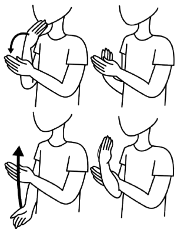
BOA TARDE
GOOD AFTERNOON
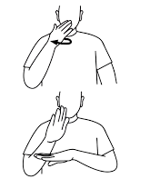
BOA NOITE
GOOD NIGHT
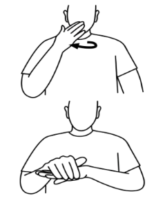

COMO VAI VOCÊ?
HOW ARE YOU?
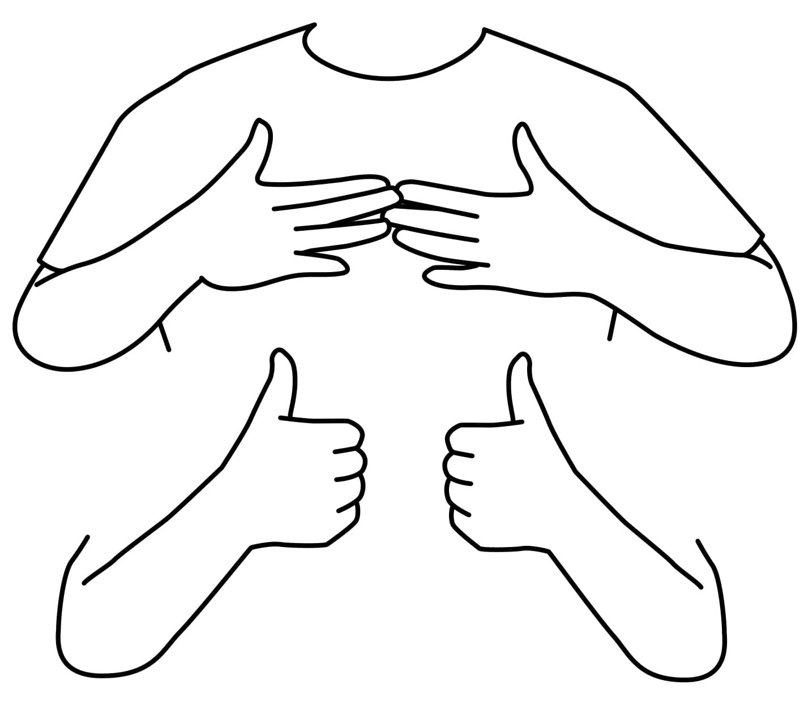
PRAZER EM CONHECER
NICE TO MEET YOU
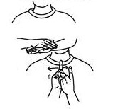
TCHAU
GOOD BYE
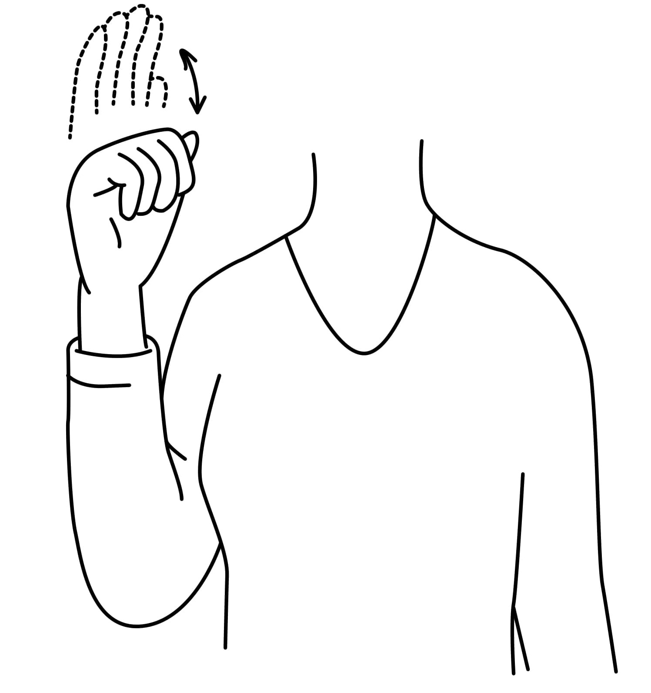

Animais
O objetivo é que a criança associe o sinal diretamente ao animal e compreenda uma de suas características principais.
-
Característica: Apresente o sinal do animal associando-o a uma característica física ou sonora fácil. Para o gato, mostre a forma do sinal e faça o som ou o movimento de seus miados/patas.
-
Imagens e Brinquedos: Imagens grandes, fotos ou bichos de pelúcia podem reforçar a associação visual.
-
Repetição e Nomeação: Sinalize e peça para a criança nomeá-lo. Em seguida, peça para a criança sinalizar o animal quando você o nomear. Isso cria a conexão bidirecional
Consolidação e Prática
Com os sinais básicos memorizados, o foco se move para a diferenciação e organização dos animais em categorias. Introduza a categorização. Sinalize uma categoria (Ex: "Animal da Fazenda") e aponte aleatoriamente para diferentes figuras de animais. A criança deve sinalizar "SIM" ou "NÃO" (ou balançar a cabeça) para confirmar se o animal pertence àquela categoria.
JACARÉ
ALLIGATOR
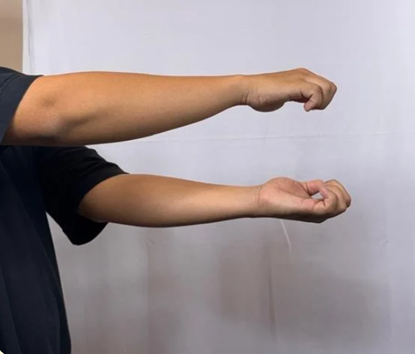
BORBOLETA
BUTTERFLY
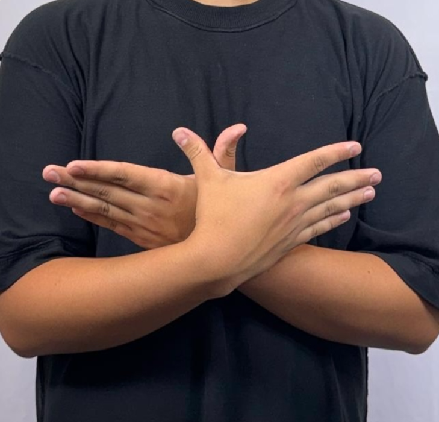
GOLFINHO
DOLPHIN
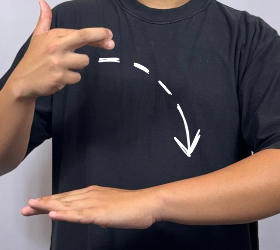
GALINHA
CHICKEN
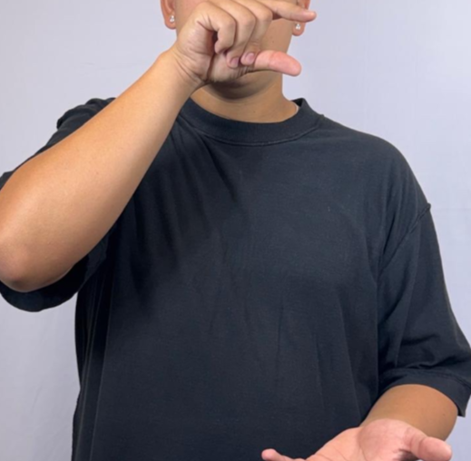
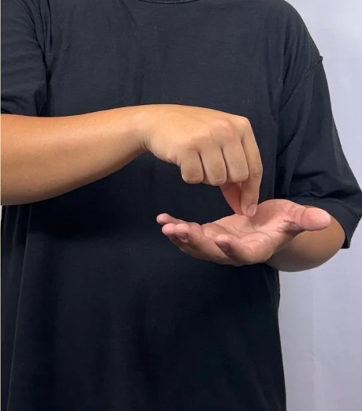
URSO
BEAR
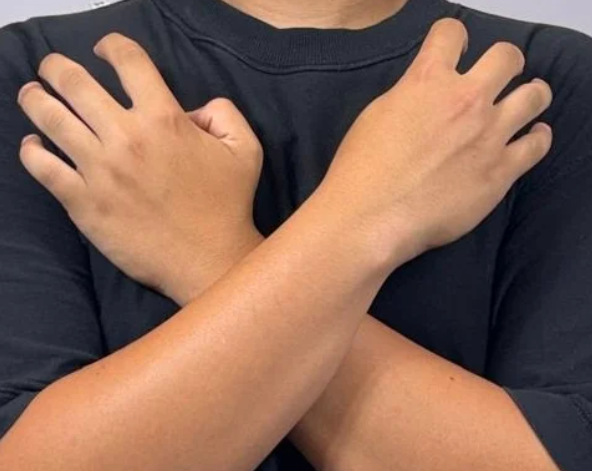
MORCEGO
BAT
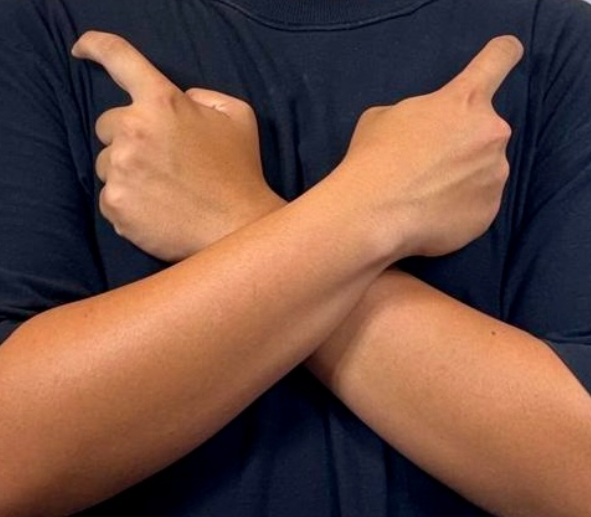
TARTARUGA MARINHA
SEA TURTLE
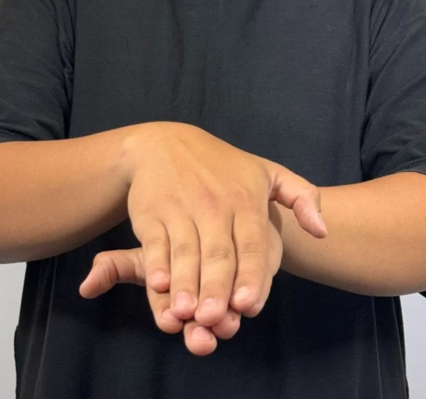

Cores
O objetivo é que a criança associe o sinal da cor a uma percepção visual e, idealmente, tátil da cor.
-
Apresentação: Introduza o sinal de cada cor mostrando-o junto com um objeto daquela cor.
-
Repetição e Nomeação: Sinalize a cor e peça para a criança nomeá-la verbalmente (se possível). Em seguida, diga o nome da cor e peça para a criança fazer o sinal. Esta repetição bidirecional fortalece o elo.
-
Reforço com Cartões: Utilize cartões de cores puras. Peça à criança para classificar objetos na frente dela, colocando-os sobre o cartão da cor correspondente.
Com o vocabulário das cores memorizado, o foco é diferenciar as cores umas das outras e selecioná-las rapidamente. Espalhe vários objetos de cores diferentes. Diga o nome de uma cor (Ex: "AZUL") e peça para a criança:
-
Fazer o sinal da cor AZUL.
-
Pegar um objeto azul o mais rápido possível.
Outra ideia onde o sinal vem antes, sinalize uma cor e peça para a criança apontar para algo naquela cor na sala. Este exercício exige que a criança recupere o significado visual a partir do sinal.
BRANCO
WHITE
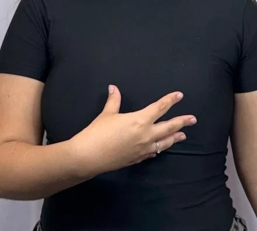
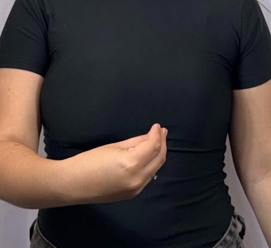
AZUL
BLUE
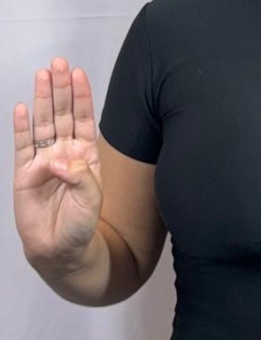
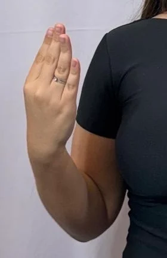
VERDE
GREEN
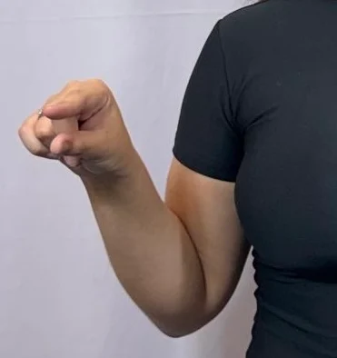
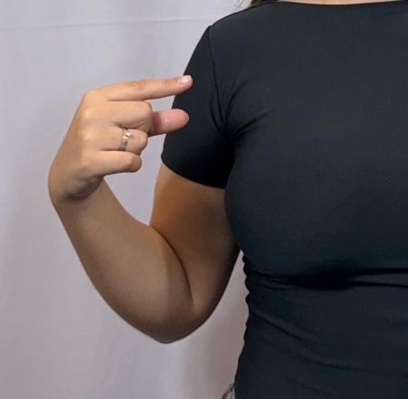
LARANJA
ORANGE
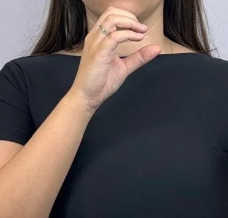
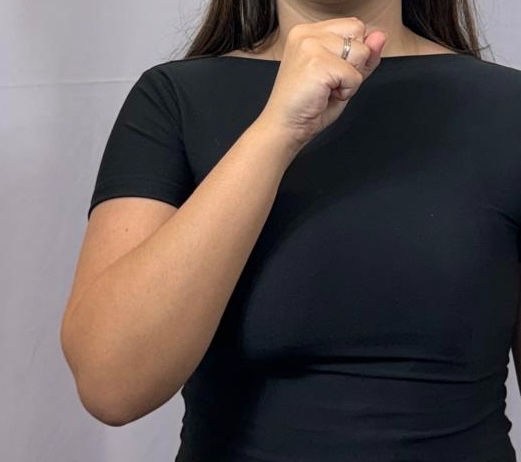
VERMELHO
RED
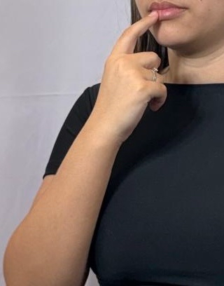
CINZA
GREY
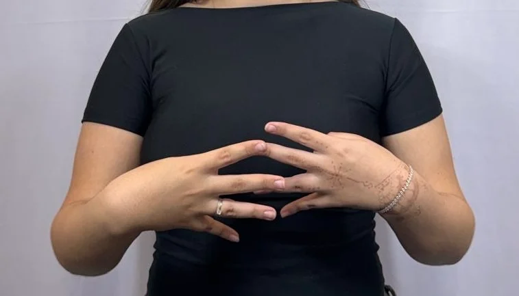
ROSA
PINK
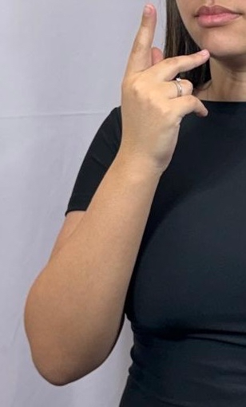